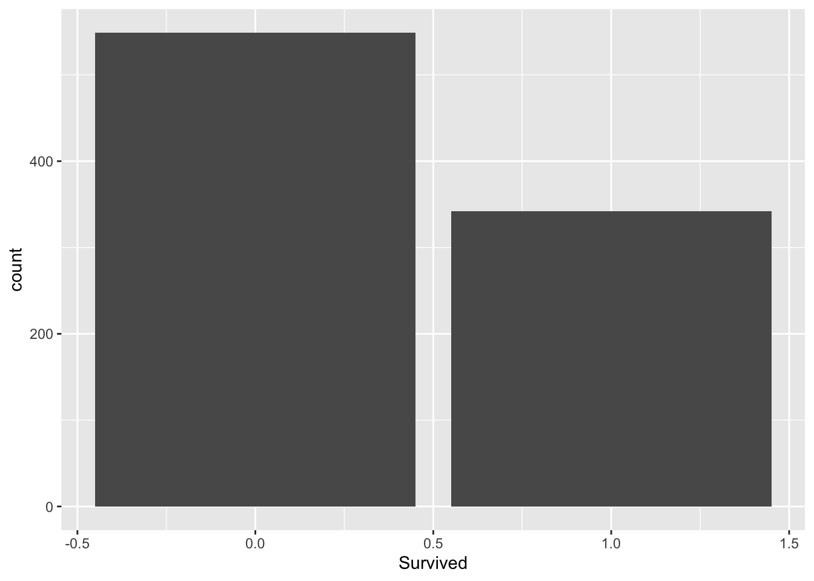
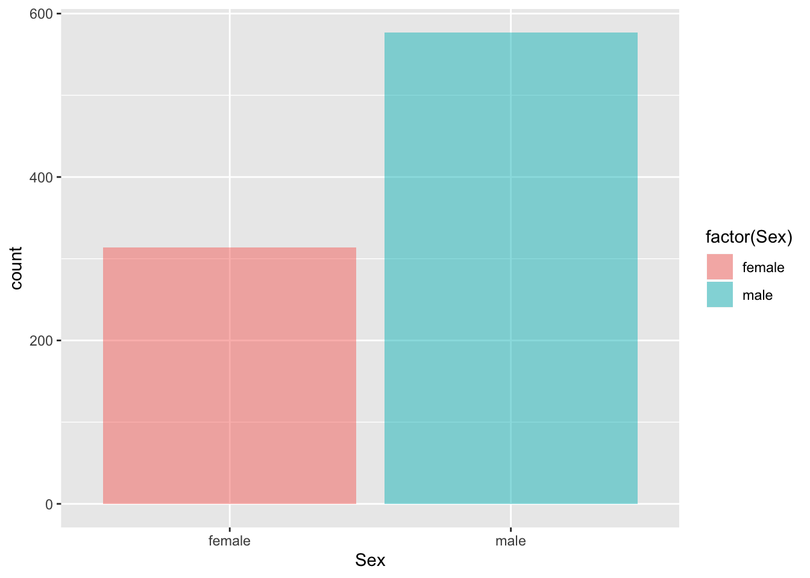
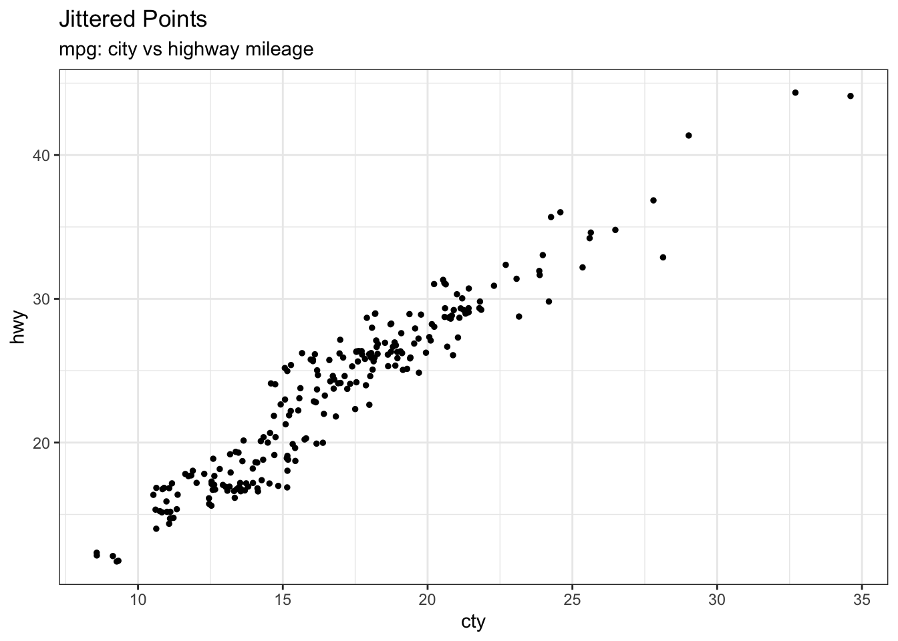
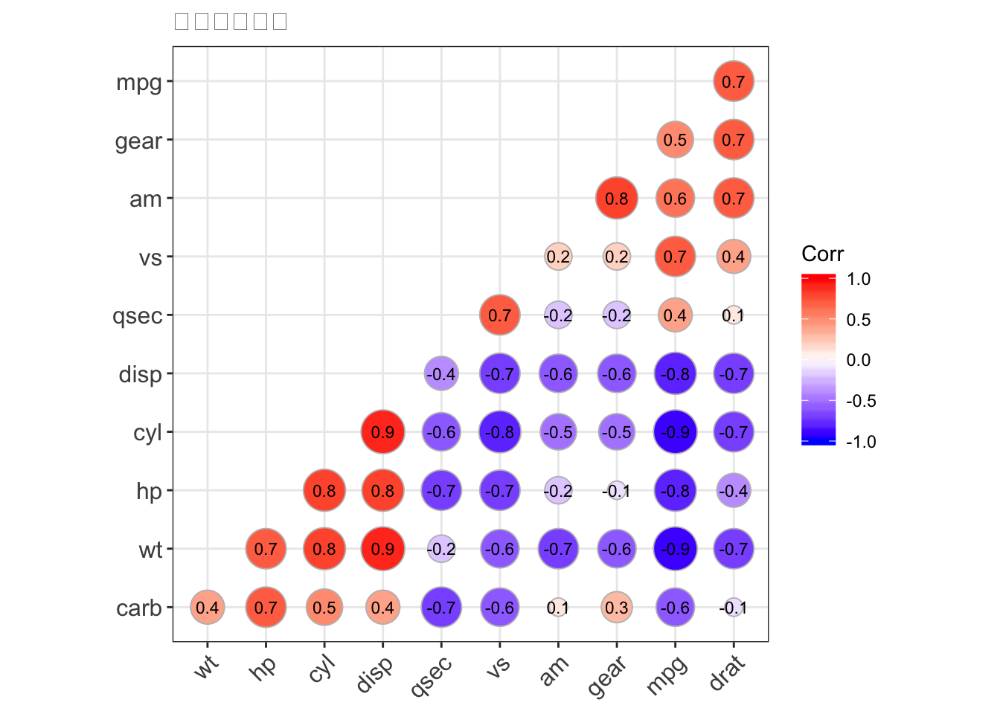

Chapter 10 ggplot visualization
10.1 ggplot 옵션 익히기
10.1.1 mpg 데이터
자동차 모델별 기술스팩 정보를 가지고 있는 데이터셋
| 항목 | 의미 |
|---|---|
| manufacturer | 자동차 제조사 |
| model | 모델이름 |
| displ | 리터당 배기량 |
| year | 생산연도 |
| cyl | 실린더 개수 |
| trans | 자동/수동 기어 정보 |
| drv | f:전륜구동, r=후륜구동, 4=4wd |
| cty | 갤런당 시내주행 연비 |
| hwy | 겔런당 고속도로 연비 |
| fl | 연료타입 |
| class | 자동차 타입 |
10.1.2 기본 그래프 생성 문법
ggplot(data = <DATA>) +
<GEOM_FUNCTION>(mapping = aes(<MAPPINGS>))- 이번장에 사용될 패키지 설치
install.packages("plotly")
install.packages("tidyverse")- 파이프 라인 연산처럼 ggplot은 ‘+’ 연산을 통해 그래프 객체 및 옵션 등을 추 가 할 수 있습니다.
- mpg 데이터셋의 각 컬럼별 의미를 확인해 봅시다.
library(tidyverse)
mpg## # A tibble: 234 x 11
## manufacturer model displ year cyl trans drv cty hwy fl class
## <chr> <chr> <dbl> <int> <int> <chr> <chr> <int> <int> <chr> <chr>
## 1 audi a4 1.8 1999 4 auto… f 18 29 p comp…
## 2 audi a4 1.8 1999 4 manu… f 21 29 p comp…
## 3 audi a4 2 2008 4 manu… f 20 31 p comp…
## 4 audi a4 2 2008 4 auto… f 21 30 p comp…
## 5 audi a4 2.8 1999 6 auto… f 16 26 p comp…
## 6 audi a4 2.8 1999 6 manu… f 18 26 p comp…
## 7 audi a4 3.1 2008 6 auto… f 18 27 p comp…
## 8 audi a4 q… 1.8 1999 4 manu… 4 18 26 p comp…
## 9 audi a4 q… 1.8 1999 4 auto… 4 16 25 p comp…
## 10 audi a4 q… 2 2008 4 manu… 4 20 28 p comp…
## # … with 224 more rowsggplot(data = mpg) + # 데이터
geom_point(mapping = aes(x = displ, y = hwy)) # 산점도 및 축 설정
10.1.3 ggplot 문법 기본
- scipen 은 지수형 숫자 표기식 설정 입니다. default 값은 ‘0’ 이며 전체 세션에 영향을 미칩 니다. scipen = x 에서 x를 큰숫자로 입력할 경우 지수형 숫자 표기가 disable 됩니다.
- scipen 은 전체 세션에 영향을 미치는 반면, format(변수명, scientific = FALSE) 은 해당 그래프에서 지수형 숫자 표기를 disable 합니다.
#Setup
options(scipen=999) # 숫자표현시 지수 표기법을 끕니다.(예 : 1e+08)
midwest <- read_csv("http://goo.gl/G1K41K") # 데이터를 읽습니다.
ggplot(midwest, aes(x=area, y=poptotal)) # 그래프는 그리지 않고 축을 참조해서 캔버스만 만듭니다.10.1.4 간단한 그래프 그리기
midwest %>% ggplot(aes(x=area, y=poptotal)) +
geom_point() 10.1.5 선그래프 추가하기
- method 의 종류
| method | 설명 |
|---|---|
| lm | 선형 모형(linear model) |
| glm | 일반화 선형 모형(generalized linear model) |
| gam | 일반화 가법 모형(generalized additive model) |
| rlm | robust linear model |
| loess | 비모수회귀 모형 |
midwest %>% ggplot(aes(x=area, y=poptotal)) +
geom_point() +
geom_smooth(method="lm") 10.1.6 X, Y 각 축에 값 제한 하기
- xlim, ylim 함수를 이용해서 축의 값 범위를 제한 할 수 있다.
midwest %>% ggplot(aes(x=area, y=poptotal)) +
geom_point() +
geom_smooth(method="lm") +
xlim(c(0, 0.1)) + ylim(c(0, 1000000)) # limit 을 벗엇난 값은 삭제함
10.1.7 그래프 확대 하기
- coord_cartesian 의 매개변수로 xlim,ylim 을 사용하지만 limit 을 넘어가는 실제 데이터는 삭제하지 않습니다.
- 단순히 xlim, ylim 에 선언된 대로 확대만 합니다.
midwest %>% ggplot(aes(x=area, y=poptotal)) +
geom_point() +
geom_smooth(method="lm") +
coord_cartesian(xlim=c(0,0.1), ylim=c(0, 2000000)) # 값은 삭제하지 않고 유지. 화면에만 보이지 않음.
10.1.8 타이틀 및 축라벨 변경
midwest %>% ggplot(aes(x=area, y=poptotal)) +
geom_point() +
geom_smooth(method="lm") +
coord_cartesian(xlim=c(0,0.1), ylim=c(0, 1000000)) +
labs(title="Area Vs Population", subtitle="From midwest dataset", y="Population", x="Area", caption="Midwest Demographics")10.1.9 색상과 점의 크기 조정
- labs 함수로 제목/소제목/축레이블/캡션을 지정 할 수 있습니다.
library(ggplot2)
ggplot(midwest, aes(x=area, y=poptotal)) +
geom_point(col="steelblue", size=3) + # 점에대해 크기와 색상을 지정
geom_smooth(method="lm", col="firebrick") + # 선의 색상을 변경
coord_cartesian(xlim=c(0, 0.1), ylim=c(0, 1000000)) +
labs(title="Area Vs Population", subtitle="From midwest dataset", y="Population", x="Area", caption="Midwest Demographics")
10.1.10 조건기반 색상 표시
- col 인자에 조건식을 사용하여 색상을 지정할 수 있습니다.
- 주의 할 점은 col 컬럼의 조건식에서 컬럼명을 테이블$컬럼명으로 명기 해야함.
library(ggplot2)
midwest %>% ggplot(aes(x=area, y=poptotal)) +
geom_point(size=3, col = ifelse(midwest$poptotal > 500000,'red','green')) + # 점에대해 크기와 색상을 지정
geom_smooth(method="lm", col = 'firebrick') + # 선의 색상을 변경
coord_cartesian(xlim=c(0, 0.1), ylim=c(0, 1000000)) +
labs(title="Area Vs Population", subtitle="From midwest dataset", y="Population", x="Area", caption="Midwest Demographics")10.1.11 그룹별로 색상 표시하기
- aes 함수의 col 인자에 그룹핑 할 컬럼명을 선언하면 됩니다. => geom 함수에서 사용 할 경우
- color 인자에 그룹핑 할 컬럼을 명기 해도 됩니다. => ggplot 함수에서 사용할 경우
10.1.12 col 인자에 명기 하는 경우
library(ggplot2)
midwest %>% ggplot(aes(x=area, y=poptotal)) +
geom_point(aes(col=state), size=3) +
geom_smooth(method="lm", col="firebrick", size=2) +
coord_cartesian(xlim=c(0, 0.1), ylim=c(0, 1000000)) +
labs(title="Area Vs Population", subtitle="From midwest dataset", y="Population", x="Area", caption="Midwest Demographics")
10.1.12.1 class 인자에 명기하는 경우
library(ggplot2)
midwest %>% ggplot(aes(x=area, y=poptotal, color = state)) +
geom_point(size=3) +
geom_smooth(method="lm", col="firebrick", size=2) +
coord_cartesian(xlim=c(0, 0.1), ylim=c(0, 1000000)) +
labs(title="Area Vs Population", subtitle="From midwest dataset", y="Population", x="Area", caption="Midwest Demographics")
10.1.13 Mark 의 모양 변경
- shape 인자를 ggplot 함수의 인자에 넣고 변수명을 맵핑 하면 됩니다.
library(ggplot2)
midwest %>% ggplot(aes(x=area, y=poptotal, shape = state, color = state)) +
geom_point(size=3) +
geom_smooth(method="lm", col="firebrick", size=2) +
coord_cartesian(xlim=c(0, 0.1), ylim=c(0, 1000000)) +
labs(title="Area Vs Population", subtitle="From midwest dataset", y="Population", x="Area", caption="Midwest Demographics")
10.1.14 Legend 없애기
library(ggplot2)
midwest %>% ggplot(aes(x=area, y=poptotal)) +
geom_point(aes(col=state), size=3) +
geom_smooth(method="lm", col="firebrick", size=2) +
coord_cartesian(xlim=c(0, 0.1), ylim=c(0, 1000000)) +
labs(title="Area Vs Population", subtitle="From midwest dataset", y="Population", x="Area", caption="Midwest Demographics") +
theme(legend.position="None") 
10.1.15 Legend 테마 변경하기
library(ggplot2)
midwest %>% ggplot(aes(x=area, y=poptotal)) +
geom_point(aes(col=state), size=3) +
geom_smooth(method="lm", col="firebrick", size=2) +
coord_cartesian(xlim=c(0, 0.1), ylim=c(0, 1000000)) +
labs(title="Area Vs Population", subtitle="From midwest dataset", y="Population", x="Area", caption="Midwest Demographics") +
scale_colour_brewer(palette = "Set1")
10.1.16 색상 팔레트 종류
library(RColorBrewer)
head(brewer.pal.info, 10) ## maxcolors category colorblind
## BrBG 11 div TRUE
## PiYG 11 div TRUE
## PRGn 11 div TRUE
## PuOr 11 div TRUE
## RdBu 11 div TRUE
## RdGy 11 div FALSE
## RdYlBu 11 div TRUE
## RdYlGn 11 div FALSE
## Spectral 11 div FALSE
## Accent 8 qual FALSE10.1.17 축간격 조정 하기
- scale_x_continuous 함수를 사용하여 축간격을 조정 할 수 있습니다.
- 사용법 : scale_x_continuous(시작값, 종료값, 간격)
library(ggplot2)
midwest %>% ggplot(aes(x=area, y=poptotal)) +
geom_point(aes(col=state), size=3) +
geom_smooth(method="lm", col="firebrick", size=2) +
coord_cartesian(xlim=c(0, 0.1), ylim=c(0, 1000000)) +
labs(title="Area Vs Population", subtitle="From midwest dataset", y="Population", x="Area", caption="Midwest Demographics") +
scale_x_continuous(breaks=seq(0, 0.1, 0.01))
10.1.18 X축 역변환 하기
library(ggplot2)
midwest %>% ggplot(aes(x=area, y=poptotal)) +
geom_point(aes(col=state), size=3) +
geom_smooth(method="lm", col="firebrick", size=2) +
coord_cartesian(xlim=c(0, 0.1), ylim=c(0, 1000000)) +
labs(title="Area Vs Population", subtitle="From midwest dataset", y="Population", x="Area", caption="Midwest Demographics") +
scale_x_reverse()10.1.19 축라벨에 커스터마이징
library(ggplot2)
midwest %>% ggplot(aes(x=area, y=poptotal)) +
geom_point(aes(col=state), size=3) +
geom_smooth(method="lm", col="firebrick", size=2) +
coord_cartesian(xlim=c(0, 0.1), ylim=c(0, 1000000)) +
labs(title="Area Vs Population", subtitle="From midwest dataset", y="Population", x="Area", caption="Midwest Demographics") +
scale_x_continuous(breaks=seq(0, 0.1, 0.01), labels = sprintf("%.2f%%", seq(0, 0.1, 0.01))) +
scale_y_continuous(breaks=seq(0, 1000000, 200000), labels = function(x){paste0(x/1000, 'K')})10.1.20 테마를 사용해서 한번에 변경
- theme_set() 함수를 사용해서 테마를 설정 할 수 있습니다.
- 내장 테마 종류
| 테마명 | 테마설명 |
|---|---|
| theme_gray() | ggplot2 의 기본 테마 |
| theme_bw() | dark on light 테마 |
| theme_linedraw() | 하얀 바탕에 검정 라인을 사용한 테마 |
| theme_light() | linedraw 와 유사하지만, Gray 스케일 사용 |
| theme_dark() | 배경색을 어둡게 한 테마 |
| theme_minimal() | 최소한의 배경을 사용하고 까끔한 테마 |
| theme_classic() | 그리드 라인이 없는 테마 |
| theme_void | 테마적용하지 않음 |
10.1.20.1 BW Theme
midwest %>% ggplot(aes(x=area, y=poptotal)) +
geom_point(aes(col=state), size=3) +
geom_smooth(method="lm", col="firebrick", size=2) +
coord_cartesian(xlim=c(0, 0.1), ylim=c(0, 1000000)) +
labs(title="Area Vs Population", subtitle="From midwest dataset", y="Population", x="Area", caption="Midwest Demographics") +
theme_bw() + labs(subtitle="BW Theme")
10.1.20.2 Classic Theme
midwest %>% ggplot(aes(x=area, y=poptotal)) +
geom_point(aes(col=state), size=3) +
geom_smooth(method="lm", col="firebrick", size=2) +
coord_cartesian(xlim=c(0, 0.1), ylim=c(0, 1000000)) +
labs(title="Area Vs Population", subtitle="From midwest dataset", y="Population", x="Area", caption="Midwest Demographics") +
theme_classic() + labs(subtitle="Classic Theme")10.1.21 color / fill / alpha
10.1.22 position
10.1.23 Facet
10.1.24 stat 함수에 대해서
10.2 ggplot 에서 지원 하는 차트
10.2.1 Scatter Plot(산점도)
- 기본적인 산점도 차트
midwest %>% ggplot(aes(x=area, y=poptotal)) +
geom_point(aes(col=state, size=popdensity)) +
geom_smooth(method="loess", se=F) +
xlim(c(0, 0.1)) +
ylim(c(0, 500000)) +
labs(subtitle="Area Vs Population",
y="Population",
x="Area",
title="Scatterplot",
caption = "Source: midwest")- 산점도 차트에 선택된 데이터 표시하기
#install.packages("ggalt")
library(ggalt)
midwest_select <- midwest %>% filter(poptotal > 350000 &
poptotal <= 500000 &
midwest$area > 0.01 &
midwest$area < 0.1
)
# Plot
midwest %>% ggplot(aes(x=area, y=poptotal)) +
geom_point(aes(col=state, size=popdensity)) + # 산점도 그래프
geom_smooth(method="loess", se=F) +
xlim(c(0, 0.1)) +
ylim(c(0, 500000)) + # 라인그래프 추가
geom_encircle(aes(x=area, y=poptotal),
data=midwest_select,
color="red",
size=2,
expand=0.08) + # 각종 제목 및 설명 추가
labs(subtitle="Area Vs Population",
y="Population",
x="Area",
title="Scatterplot + Encircle",
caption="Source: midwest")
10.2.2 jitter plot
- 산점도로 그래프를 그릴때 데이터가 많아 겹치는 점이 생길수 있습니다. 이럴경우 전체적인 데이터의 분포를 확인 할 수는 없습니다.
- 좀더 데이터의 분포를 정확하게 확인하기 위해 jiiter plot 을 사용 합니다.
- jitter plot 은 무작위적인 노이즈를 추가해서 동일한 위치점 점들을 살짝 비틀어 표시합니다.
산점도와 비교해서 그래프를 출력해보세요 geom_jitter 를 geom_point 로 바꾸면 됩니다.
# load package and data
library(ggplot2)
#data(mpg, package="ggplot2")
# mpg <- read.csv("http://goo.gl/uEeRGu")
# Scatterplot
theme_set(theme_bw()) # pre-set the bw theme.
g <- ggplot(mpg, aes(cty, hwy))
g + geom_jitter(width = .5, size=1) +
labs(subtitle="mpg: city vs highway mileage",
y="hwy",
x="cty",
title="Jittered Points")
10.2.3 Count Plot
- 산점도의 데이터 분포를 정확하게 확인 하기 위한 방법으로 jitter plot 외에 Count Plot 이 있습니다.
- 분포 집중도에 따라 점의 크기가 달라 집니다.
theme_set(theme_bw()) # 테마 설정
mpg %>% ggplot(aes(cty, hwy)) +
geom_count(col="tomato3", show.legend=F) +
labs(subtitle="mpg: city vs highway mileage",
y="hwy",
x="cty",
title="Counts Plot")10.2.4 가장자리 분포 그래프 추가
- 데이터의 분포를 좀더 정확하게 확인 하기 위해 각축의 데이터의 분포를 Histogram 이나 Bixplot 으로 표시 할 수 있습니다.
#install.packages("ggExtra")
library(ggExtra)
library(grid)
theme_set(theme_bw())
mpg_select <- mpg[mpg$hwy >= 35 & mpg$cty > 27, ]
g <- mpg %>% ggplot(aes(cty, hwy)) +
geom_count() +
geom_smooth(method="lm", se=F)
ggMarginal(g, type = "histogram", fill="transparent")
ggMarginal(g, type = "boxplot", fill="transparent")10.2.5 Correlogram
- correlogram plot 은 모든 변수관의 상관 관걔를 한눈에 확인 할수 있는 그래프 입니다.
- scale_colour_gradientn 함수를 이용해 팔레트를 지정합니다.
#devtools::install_github("kassambara/ggcorrplot")
#install.packages('extrafont')
library(ggcorrplot)
# Correlation 연산한 결과를 corr 에 저장 합니다.
data(mtcars)
corr <- round(cor(mtcars), 1)
corr## mpg cyl disp hp drat wt qsec vs am gear carb
## mpg 1.0 -0.9 -0.8 -0.8 0.7 -0.9 0.4 0.7 0.6 0.5 -0.6
## cyl -0.9 1.0 0.9 0.8 -0.7 0.8 -0.6 -0.8 -0.5 -0.5 0.5
## disp -0.8 0.9 1.0 0.8 -0.7 0.9 -0.4 -0.7 -0.6 -0.6 0.4
## hp -0.8 0.8 0.8 1.0 -0.4 0.7 -0.7 -0.7 -0.2 -0.1 0.7
## drat 0.7 -0.7 -0.7 -0.4 1.0 -0.7 0.1 0.4 0.7 0.7 -0.1
## wt -0.9 0.8 0.9 0.7 -0.7 1.0 -0.2 -0.6 -0.7 -0.6 0.4
## qsec 0.4 -0.6 -0.4 -0.7 0.1 -0.2 1.0 0.7 -0.2 -0.2 -0.7
## vs 0.7 -0.8 -0.7 -0.7 0.4 -0.6 0.7 1.0 0.2 0.2 -0.6
## am 0.6 -0.5 -0.6 -0.2 0.7 -0.7 -0.2 0.2 1.0 0.8 0.1
## gear 0.5 -0.5 -0.6 -0.1 0.7 -0.6 -0.2 0.2 0.8 1.0 0.3
## carb -0.6 0.5 0.4 0.7 -0.1 0.4 -0.7 -0.6 0.1 0.3 1.0# 그래프 그리기 (팔레트 이용)
ggcorrplot(corr, hc.order = TRUE,
type = "lower",
lab = TRUE,
lab_size = 3,
method="circle",
title="변수상관관계",
ggtheme=theme_bw) +
scale_colour_gradientn(colours=rainbow(4))
10.2.6 Bar 그래프
- mpg 데이터 셋에서 해당 자동차 제조회사 소속의 모든 자동자 에 대한 평균 시내주행 연비를 비교
cty_mpg <- mpg %>%
group_by(manufacturer) %>% # 제조사별 그룹핑
summarise(delay = mean(cty,na.rm=TRUE)) # 평균 시내주행 연비 계산
colnames(cty_mpg) <- c("make", "mileage") # 컬럼 이름 변경
cty_mpg <- arrange(cty_mpg, mileage) # 정렬
# 제조사를 factor 로 지정 (정렬을 하고 factor 레벨을 정하면 그것이 곧 순서가 됨)
# factor 를 지정한 이후에 정렬을 하게 되면 그래프가 어떻게 바뀌는지 테스트 해보세요
# reorder 함수를 사용해서 ggplot 함수내에서 정렬도 가능 합니다.
cty_mpg$make <- factor(cty_mpg$make, levels = cty_mpg$make)
head(cty_mpg, 4)## # A tibble: 4 x 2
## make mileage
## <fct> <dbl>
## 1 lincoln 11.3
## 2 land rover 11.5
## 3 dodge 13.1
## 4 mercury 13.2theme_set(theme_bw())
# 그래프 그리기
ggplot(cty_mpg, aes(x=make, y=mileage)) +
geom_bar(stat="identity", width=.5, fill="tomato3") +
labs(title="Ordered Bar Chart",
subtitle="Make Vs Avg. Mileage",
caption="source: mpg") +
theme(axis.text.x = element_text(angle=65, vjust=0.6))- reorder 함수를 사용해서 정렬 하는 경우
cty_mpg <- mpg %>%
group_by(manufacturer) %>% # 제조사별 그룹핑
summarise(delay = mean(cty,na.rm=TRUE)) # 평균 시내주행 연비 계산
colnames(cty_mpg) <- c("make", "mileage") # 컬럼 이름 변경
cty_mpg$make <- factor(cty_mpg$make, levels = cty_mpg$make) # 정렬하지 않고 factor 지정
# reorder 함수를 사용해서 정렬 (mileage 앞에 '-' 를 붙이면 어덯게 될까요?)
ggplot(cty_mpg, aes(x=reorder(make, mileage), y=mileage)) +
geom_bar(stat="identity", width=.5, fill="tomato3") +
labs(title="Ordered Bar Chart",
subtitle="Make Vs Avg. Mileage",
caption="source: mpg") +
theme(axis.text.x = element_text(angle=65, vjust=0.6))10.2.7 Stacked Bar Plot (누적 막대 그래프)
- aes 에 별도로 stat 함수를 선언하지 않으면, 자동으로 빈도수(count) 가 stat 함수가 됩니다.
- aes 의 fill 파라메터에 할당한 컬럼명이 누적 대상이 됩니다.
g <- ggplot(mpg, aes(x = manufacturer)) # x 축만 선언하게 되면 y 는 빈도수 (자동차 회사 이름 등장 횟수)
g + geom_bar(aes(fill=class), width = 0.5) + # fill 에 할당한 컬럼명이 누적 막대그래프의 누적 대상이 됩니다.
theme(axis.text.x = element_text(angle=65, vjust=0.6)) + # 텍스트 각도 지정
labs(title="Categorywise Bar Chart",
subtitle="Manufacturer of vehicles",
caption="Source: Manufacturers from 'mpg' dataset")10.2.8 ggthemr 적용하기
#devtools::install_github('cttobin/ggthemr') #라이브러리 설치
library(ggthemr)
ggthemr("dust") # 테마를 세션에 설정
midwest %>% ggplot(aes(x=area, y=poptotal)) +
geom_point(aes(col=state), size=3) +
geom_smooth(method="lm", col="firebrick", size=2) +
coord_cartesian(xlim=c(0, 0.1), ylim=c(0, 1000000)) +
labs(title="Area Vs Population", subtitle="From midwest dataset", y="Population", x="Area", caption="Midwest Demographics") 
ggthemr_reset() # ggthemr 의 테마 삭제